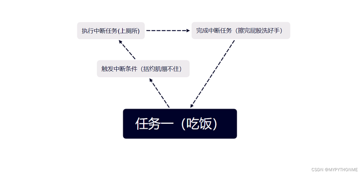
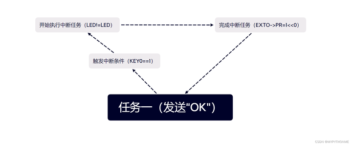

前言
在阅读本文前请先了解如何实现按键电灯。
一、中断原理

单片机只能串行运行程序，无法一边烧开水一边洗衣服。
所以如果单片机吃饭(任务一)吃到一半想上厕所（中断任务）怎么办？
- 首先得你的括约肌得先绷不住（触发中断条件），
- 然后你放下碗筷去往厕所（执行中断任务），
- 擦好屁股洗好手（完成中断任务），
- 回来继续吃饭(任务一)。
二、实例——外部中断按键点灯
led.h
#ifndef __LED_H
#define __LED_H
#include "sys.h"
//LED端口定义
#define LED0 PAout(8) // PA8
void LED_Init(void); //初始化
#endif
led.c
#include "sys.h"
#include "led.h"
//初始化PA8
//LED IO初始化
void LED_Init(void)
{
RCC->APB2ENR|=1<<2; //使能PORTA时钟
GPIOA->CRH&=0XFFFFFFF0;
GPIOA->CRH|=0X00000003;//PA8 推挽输出
GPIOA->ODR|=1<<8; //PA8 输出高
}
key.h
#ifndef __KEY_H
#define __KEY_H
#include "sys.h"
#define KEY0 PCin(5) //PC5
void KEY_Init(void); //IO初始化
#endif
key.c
#include "key.h"
#include "delay.h"
//按键初始化函数
//PA0.15和PC5 设置成输入
void KEY_Init(void)
{
GPIOC->CRL&=0XFF0FFFFF; //PC5设置成输入
GPIOC->CRL|=0X00800000;
GPIOC->ODR|=1<<5; //PC5上拉
}
以上程序实现，KEY0=PCin(5)，为上拉输入，即按键未按时，PC5读入高电平，KEY0=1；当接地时（按键按下时），PC5电平下降（！！中断触发条件），KEY(0)=0。
main.c
#include "sys.h"
#include "usart.h"
#include "delay.h"
#include "led.h"
#include "exti.h"
//可以看到我们并未在main函数中引入"key.h"
int main(void)
{
Stm32_Clock_Init(9);//系统时钟设置
delay_init(72); //延时初始化
uart_init(72,9600); //串口初始化
LED_Init(); //初始化与LED连接的硬件接口
EXTI_Init(); //外部中断初始化
LED0=0; //点亮LED
while(1) //程序在主函数中陷入死循环
{
printf("OK\r\n");
delay_ms(1000);
}
}
我让main函数陷入串口发送“OK”的死循环，按照串行逻辑，此时按键无法对程序执行产生影响。但当我们引入中断，就可以实现如图功能：

接下来我们进入中断函数：
exit.c
#include "exti.h"
#include "led.h"
#include "key.h"
#include "delay.h"
#include "usart.h"
//外部中断9~5服务程序
void EXTI9_5_IRQHandler(void)
{
delay_ms(10); //消抖
if(KEY0==0) //按键0
{
LED0=!LED0;
}
EXTI->PR=1<<5; //清除LINE5上的中断标志位
}
//外部中断初始化程序
//初始化PC5为中断输入.
void EXTI_Init(void)
{
KEY_Init();
Ex_NVIC_Config(GPIO_C,5,FTIR); //下降沿触发
MY_NVIC_Init(2,0,EXTI9_5_IRQn,2); //抢占2，子优先级1，组2
}
中断初始化EXTI_Init(void)
在main.c开始，我们先进行了EXTI_Init(void)，所以需要了解三个中断设置函数：
设置函数MY_NVIC_Init
该函数有 4 个参数，分别为： NVIC_PreemptionPriority 、NVIC_SubPriority、 NVIC_Channel、 NVIC_Group 。
第一 个 参数NVIC_PreemptionPriority为中断抢占优先级数值，第二个参数 NVIC_SubPriority 为中断子优先 级数值，前两个参数的值必须在规定范围内，否则也可能产生意想不到的错误。第三个参数 NVIC_Channel 为中断的编号，最后一个参数 NVIC_Group 为中断分组设置（范围为 0~4）。
分组函数 MY_NVIC_PriorityGroupConfig
该函数的参数NVIC_Group为要设置的分组号，可选范围为0至4，总共 5 组。如果参数非法，将可能导致不可预料的结果。
规定触发方式Ex_NVIC_Config
该函数有3个参数：GPIOx 为 GPIOA~G（0~6），在 sys.h 里面有定义。代表要配置的 IO 口。BITx 则代表这个 IO 口的第几位。TRIM 为触发方式，低 2 位有效（0x01 代表下降触发；0x02 代表 上升沿触发；0x03 代表任意电平触发）。
//外部中断初始化程序
//初始化PC5为中断输入
void EXTI_Init(void)
{
KEY_Init();//对按键的输入输出进行初始化，KEY=PCin（5）
//规定中断触发条件，本程序中是PC5in电平下降
Ex_NVIC_Config(GPIO_C,5,FTIR); //下降沿触发
//如果是高电平触发，则FTIR改为RTIR
MY_NVIC_Init(2,0,EXTI9_5_IRQn,2); //抢占2，子优先级0，组2
}
中断服务函数EXTI9_5_IRQHandler(void)
该程序即为“上厕所”。STM32 的外部中断 0至4 都有单独的中断服务函数，但是从 5 开始， 他们就没有单独的服务函数了，而是多个中断共用一个服务函数，比如外部中断 5至9 的中断服 务函数为：void EXTI9_5_IRQHandler(void)，类似的，void EXTI15_10_IRQHandler(void)就是 外部中断 10~15 的中断服务函数。
//外部中断9~5服务程序
void EXTI9_5_IRQHandler(void)
{
delay_ms(10); //消抖
if(KEY0==0) //按键0
{
LED0=!LED0;
}
EXTI->PR=1<<5; //清除LINE5上的中断标志位
}
总结
单片机学习到尽头就是操作系统。单片机某一时刻只能执行一件任务A。当A一个任务就能把算力全部吃掉时，这样做无可厚非；而发展到后来，硬件资源足够充足，A不足以消耗所有资源时，B\C\D程序必须等待A程序执行完毕才能执行，这无疑是一种浪费。而操作系统的优势在于能够并行程序，同时执行ABCD，充分利用硬件资源，大大提高了程序的运行速度。